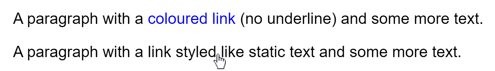

These (still) aren't the SCs you're looking for …
(mis)adventures in WCAG 2.x interpretation and audits
Patrick H. Lauke / a11yTO / 19 October 2023
(mis)adventures in WCAG 2.x interpretation and audits
(mis)adventures in WCAG 2.x interpretation and audits
Patrick H. Lauke / a11yTO / 19 October 2023
you may have already seen an earlier version of this talk …
even years later, the same question still bubbles up
(on mailing lists, a11ySlack, mastodon, …)
“which success criterion can I fail this under?”

far too often, auditors clearly dislike something, and look for a justification to fail it …
and I get it … sometimes it's just to show how smart we are
overstep the boundaries of WCAG SCs
claim something has to be fixed/changed "to pass WCAG" when it normatively doesn't
but our audits and evaluations often have some legal dimension to them.
… of course, this is easier said than done
WCAG is built on the idea that success criteria can be evaluated clearly, unambiguously and consistently…
… but that's not always the case
with WCAG 2.2 we now have
9 more SCs!
… just more potential for confusion and misinterpretation?
only a few cherry-picked examples
but there's more where that came from…
WCAG success criteria are often misunderstood and/or misinterpreted
leads to wrong, or at least inconsistent, error reporting

Headings and labels describe topic or purpose.
this doesn't mandate the use of headings and labels … only that if a page uses headings and labels, they must be descriptive.
it also doesn't mandate that headings and labels be correctly marked-up - that's the job of 1.3.1 Info and Relationships and (where it affects "accessible name" of controls) 4.1.2 Name, Role, Value.
lastly, if labels aren't there, it's a 3.3.2 Labels or Instructions problem.
<p class="heading1">More information</p>Labels or instructions are provided when content requires user input.
again, this doesn't mandate that labels be marked-up as <label> and properly associated with form controls - that's covered by 1.3.1 Info and Relationships and (where it affects "accessible name" of controls) 4.1.2 Name, Role, Value.
<input type="text"><p>First name</p>
<input type="text"><p>First name</p>
<input type="text" aria-label="First name">All functionality of the content is operable through a keyboard interface […]
doesn't say anything about which keys are needed to operate controls/functionality
<a href="#" onclick="…" role="button">fake button</a>even though it doesn't respond to SPACE like real button would
<a href="#" role="button">Activate using 'b'</a>.addEventListener('keypress', function(e) {
if (e.key == 'b') { /* do something */ }
})even though it can only be triggered using the letter b
Instructions provided for understanding and operating content do not rely solely on sensory characteristics of components such as shape, color, size, visual location, orientation, or sound.
this only relates specifically to instructions … and not whether or not sensory characteristics are used for content - this is covered by other SCs, like 1.4.1 Use of Color or even 1.1.1 Non-Text Content.
SCs that are interpreted as their opposites
Color is not used as the only visual means of conveying information, indicating an action, prompting a response, or distinguishing a visual element.
both lines contain a link. but only in the first line is colour used.
the first cases fails 1.4.1 Use of Color, but the second passes
auditors pondering failing the previous example for not using colour …
Information, structure, and relationships conveyed through presentation can be programmatically determined or are available in text.
auditors pondering failing the previous example for not conveying things through presentation …
SCs are non-commutative
("if X, then Y" does not mean "if Y, then X")
<a href="…"> <img src="…"> </a>fails multiple criteria, in sequence:
need consistency in how this is reported
The default human language of each Web page can be programmatically determined.
The human language of each passage or phrase in the content can be programmatically determined […]
if you can't determine the language of the page, then you also can't determine the language of each passage or phrase.
fail one, and you automatically fail the other …
fail one, and you automatically fail the other …
need consistency in how this is reported (if you care about AAA)
auditor education / consistency problems …
internal training and resources can help
WCAG 2.x is not perfect
written by well-meaning, but fallible humans …
All non-text content […] has a text alternative that serves the equivalent purpose- but what's the purpose?
Captions are provided …- but do these captions need to be exact, identify speakers, etc.?
Information, structure, and relationships conveyed through presentation […]- where do you draw the line?
Headings and labels describe topic or purpose- what's "descriptive" exactly?
<a href="/">home</a>
<a href="…">products</a>
<a href="…">contact</a>do you fail 1.3.1 Info and Relationships because they didn't wrap this in a <ul>, even if this isn't conveyed through presentation
?
if you look hard enough, it's turtles lists all the way down
The purpose of each link can be determined from the link text alone or from the link text together with its programmatically determined link context […]
what counts as "programmatically determined link context"? do preceding headings count?

understanding documents and techniques try to clarify …
normative versus
non-normative
understanding / techniques can't provide examples of all possible scenarios
beyond the need for subjective interpretation
WCAG success criteria can have odd loopholes…
Any keyboard operable user interface has a mode of operation where the keyboard focus indicator is visible.
but what does visible mean? it's not normatively defined…
a single extra pixel shown on focus is arguably visible
WCAG 2.1 decided not to modify 2.0 SCs, patched loopholes with more SCs
but these new SCs also ended up having some loopholes
The visual presentation of the following have a contrast ratio of at least 3:1 against adjacent color(s):
- User Interface Components: Visual information required to identify user interface components and states […]
- Graphical Objects: […]

much better … that pixel has a 3:1 contrast ratio now
… but we'll fix focus WCAG 2.2?
2.4.11 Focus Appearance (Minimum) (Level AA)
2.4.12 Focus Appearance (Enhanced) (Level AAA)
… but we'll fix focus WCAG 2.2!
2.4.11 Focus Appearance (Minimum) (Level AA)
2.4.12 Focus Appearance (Enhanced) (Level AAA)
2.4.13 Focus Appearance (Level AAA)
Only at Level AAA … where success criteria go to die …
When a user interface component receives keyboard focus, the component is not entirely hidden due to author-created content.
classic example: sticky header …
this passes 2.4.11 Focus Not Obscured (Minimum) (AA)
but how far can we take the "not entirely hidden" aspect?
arguably … not entirely hidden
(some disagree whether or not focus indicator is part of the user interface component)
Color is not used as the only visual means of conveying information, indicating an action, prompting a response, or distinguishing a visual element.
if your focus indication just changes colour, 1.4.1 likely applies
If content is conveyed through the use of colors that differ not only in their hue, but that also have a significant difference in lightness, then this counts as an additional visual distinction, as long as the difference in relative luminance between the colors leads to a contrast ratio of 3:1 or greater.
used to be buried in technique F73, now in understanding for 1.4.1 (#1500)
beware: if you look hard enough, everything is a use of color.
is it essential for conveying information or just eye candy?

SCs that are overly specific …
and then end up only applying to very specific cases
Content can be presented without loss of information or functionality, and without requiring scrolling in two dimensions for:
- Vertical scrolling content at a width equivalent to 320 CSS pixels
- Horizontal scrolling content at a height equivalent to 256 CSS pixels
[…]
to help low vision users. should ideally have been "use responsive design"
instead, it was watered down to 400% zoom on a 1280×1024 display … and now only normatively applies at those exact values
In content implemented using markup languages that support the following text style properties, no loss of content or functionality occurs by setting all of the following […]:
- Line height (line spacing) to at least 1.5 times the font size
- Spacing following paragraphs to at least 2 times the font size
- Letter spacing (tracking) to at least 0.12 times the font size
- Word spacing to at least 0.16 times the font size
[…]
only those exact values and over
do you test the "at least" part here, and up to which values?
what if user changes just a few (e.g. just letter spacing)
this bookmarklet didn't work to change text styles … can I fail this?
no you can't … the SC doesn't care if a user can or can't change the metrics, or if a particular bookmarklet or method doesn't work.
only that if the metrics are indeed changed, then content doesn't become unreadable or unusable.
Understanding 1.4.12: clarify the intent and author responsibility #1687
A cognitive function test (such as remembering a password or solving a puzzle) is not required for any step in an authentication process […]
what counts as an authentication process …
SCs that are confusingly titled
The size of the target for pointer inputs is at least 24 by 24 CSS pixels […]
at first glance, the SC defines a minimum target size (it says so in the title)
The size of the target for pointer inputs is at least 24 by 24 CSS pixels except where:
…
- Spacing: Undersized targets (those less than 24 by 24 CSS pixels) are positioned so that if a 24 CSS pixel diameter circle is centered on the bounding box of each, the circles do not intersect another target or the circle for another undersized target
the first exception turns this into Target Spacing (Minimum)

no target too small – as long as it has spacing
If a Web page contains any of the following help mechanisms, and those mechanisms are repeated on multiple Web pages within a set of Web pages, they occur in the same order relative to other page content, unless a change is initiated by the user […]:
the understanding document goes in depth listing and explaining help mechanisms, but the SC doesn't actually require any help mechanisms to be present at all …
relative order here means just means a consistent "focus/reading order"
"If the help item is visually in a different location, but in the same serial order, that is not helpful from a user's point of view, but it would not fail this criterion."

even after years of auditing,
I sometimes have weird moments of realisation
seeing SCs, and what they say/apply to, in a new light
same discussions about applicability and interpretation even happen within the AGWG
WCAG SCs are binary
you either
pass or fail

sometimes the values/thresholds are just arbitrary lines in the sand …
no weighting given to impact or frequency of a particular fail,
or how bad a failure is off the mark
sometime, you just want to say something's a minor or soft fail, but distinction doesn't exist
loopholes, omissions and subjective requirements can and will be exploited
auditors aren't the only ones who try to find these gaps …
… so what do we do then?
join my WCAG Trash Panda Web Ring
github.com/w3c/wcag/issues?q=is%3Aopen%20patrickhlauke
to look for discussions and pending clarifications
frustration: most efforts has been going towards new WCAG 2.2 SCs
rather than fixing what's broken in 2.0/2.1
w3.org/TR/wcag-3.0 … but still very early days
and it will be quite some time before legislation references 3.0 once it's actually a ratified recommendation …
but in the meantime …
don't creatively reinterpret
what an SC says
to fit your agenda
whether you're a developer or an auditor doing an evaluation
“but unless it's reported as a WCAG failure
the client won't change it”
then you have more fundamental problem …
as auditor, you do your client a disservice by not making clear what is and isn't a normative failure
what happens when a clued-up client rightly challenges your claim? all your other results lose credibility!
be conservative in your
pass / fail assessments
document your hesitation, clearly state when something's "more of a suggestion" than a hard failure